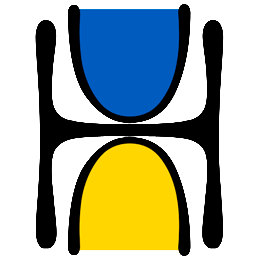

Help Ukraine
#StandWithUkraine
Save Life in Ukraine
Tweet this service
Nova Ukraine
Tweet this service
Support Hospitals in Ukraine
Tweet this service
Razom For Ukraine
Tweet this service
Army SOS
Tweet this service
Sunflower for Peace
Tweet this service
Ukrainian Red Cross
Tweet this service
Doctors Without Borders
Tweet this service
Voices Of Children
Tweet this service
Revived Soldiers Ukraine
Tweet this service

United Help Ukraine
Tweet this service
Territory of Kindness
Tweet this service